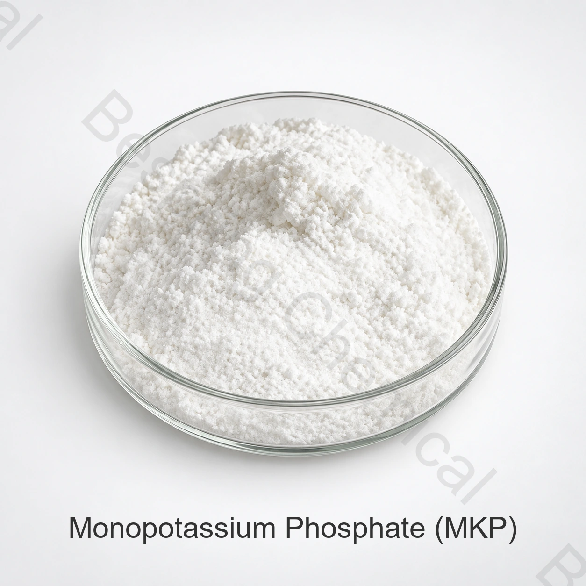

Буферные системы
MKP может способствовать буферизации фосфатов и калия в подходящих составах, где поведение pH должно контролироваться.
Фосфат пищевого качества · Калийная соль · CAS 7778-77-0
Фосфат монопотасия представляет собой ортофосфат, используемый в выбранных пищевых и ферментационных системах в качестве буфера, питательного вещества для культуры, дрожжевой культуральной помощи, закваски и ферментационной помощи.
Укажите, что пищевой сорт необходим, и включите заявку, спецификацию, количество, место назначения и документы.

Кратко о продукте
Пищевой монофосфат калия (MKP), также называемый дигидрогенфосфатом калия или монобазным фосфатом калия, является ортофосфатом с формулой KH2PO4 CAS номер 7778-77-0.
Поставляемая спецификация указывает не менее 98,0% KH2PO4 Покупатели продуктов питания должны отличать этот класс от удобрений или технических марок и квалифицировать идентичность, примеси, документацию и эффективность применения.
Области применения
В представленном руководстве по применению определены роли культуры, приправы, дрожжей, закваски и ферментации. Для точного использования необходимо подтвердить техническую пригодность и нормативный статус.
MKP может способствовать буферизации фосфатов и калия в подходящих составах, где поведение pH должно контролироваться.
Может использоваться в качестве источника фосфата и калия в квалифицированных бактериальных культурах и биопроцессных средах.
Оценка в дрожжевых и связанных с пивоварением культурных систем в рамках полной программы питательных веществ.
Представленное руководство идентифицирует MKP в процессах, используемых для синтеза или производства выбранных приправ.
Может быть оценен как фосфатный компонент в выбранных рецептурах, с поведением реакции, проверенным в реальном рецепте.
Может поддерживать ферментацию, когда потребности фосфата, калия и буферизации определены и подтверждены в технологическом масштабе.
Поставляемые технические данные
Приведенные ниже значения воспроизводят поставляемый товарный лист. Они не являются серийным СОА или заменой действующей согласованной спецификации на пищевые продукты и методов испытаний.
| Тестовый элемент | Спецификация |
|---|---|
| Фосфат монокалия (KH)2PO4) содержание, сухая основа | ≥98.0% |
| Фтор (F) | ≤0.001% |
| Хэви-металы (как Pb) | ≤0.001% |
| Потеря при зажигании | ≤0.5% |
| Нерастворимые в воде вещества | ≤0.1% |
| Мышьяк (As) | ≤0.0003% |
| Кадмий (CD) | ≤0.0001% |
| Ртуть (Hg) | ≤0.0001% |
| Свинец (Pb) | ≤0.0005% |
Примечание класса: "МКП" реализуется на продовольственном, ферментационном, удобрительном и техническом рынках. Требовать от предлагаемых документов указания применимой спецификации пищевого качества и источника; не утверждать класс только по химическому названию.
Квалификация покупателя
Подключите спецификацию сырья к производительности средств массовой информации, требованиям готовой пищи и правилам целевого рынка.
Проверить название продукта, CAS, формулу, пищевую основу, источник, упаковку и прослеживаемость перед выборкой.
Оцените растворение, рН и буферизацию, рост культуры или реакцию ферментации, сенсорное воздействие и совместимость с нисходящим потоком.
Запрос спецификации / TDS, SDS, COA и применимой документации HACCP, Kosher, Halal и ISO для предлагаемой поставки.
Хранение и обработка
Вопросы покупателя
Да. Фосфат монокалия, дигидрогенфосфат калия и монобазный фосфат калия - это названия для KH2PO4CAS 7778-77-0.
Химическая идентичность может быть одинаковой, но применимые спецификации, примеси, средства контроля, документация, объем производства или упаковки и нормативная пригодность могут отличаться.
Поставляемый пищевой лист содержит не менее 98,0% KH2PO4 Подтвердите текущую согласованную спецификацию и COA на партию.
Поставляемый эталон составляет 25 кг на сумку, 23 метрических тонны на 20-футовый контейнер и минимальный заказ 500 кг. Подтвердить текущие поддоны, лайнер и детали загрузки.
Государственный пищевой сорт, предполагаемое применение, целевая спецификация, количество, упаковка, порт назначения, необходимые документы и запрошенная дата доставки.
Редакционный обзор: Технический и экспортный отдел Bespring Chemical · Обновлено 2026-07-19
Связанные фосфаты калия
Метафосфат с различным составом и функциями пищевой переработки.
Конденсированный фосфат для выбранных систем эмульгации, влажности и секвестрации.
Щелочный пирофосфат для отдельных применений пищевой промышленности.
Поставка по согласованной спецификации
Укажите техническими и коммерческими деталями, необходимыми для анализа поставок продуктов питания.